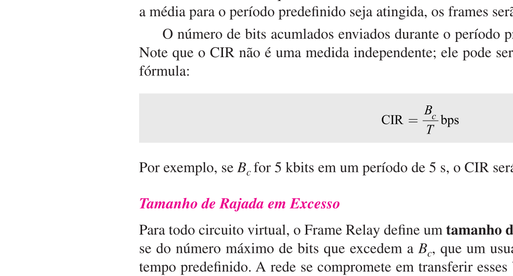
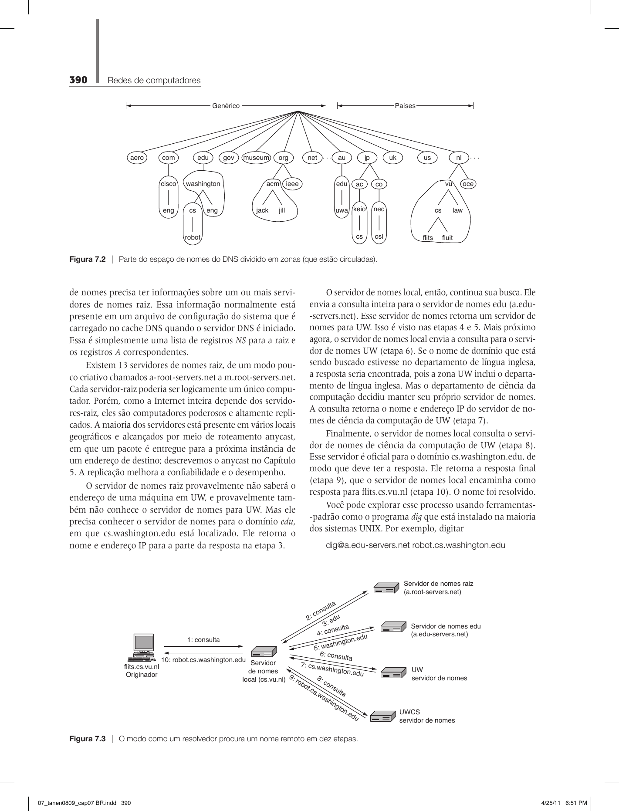
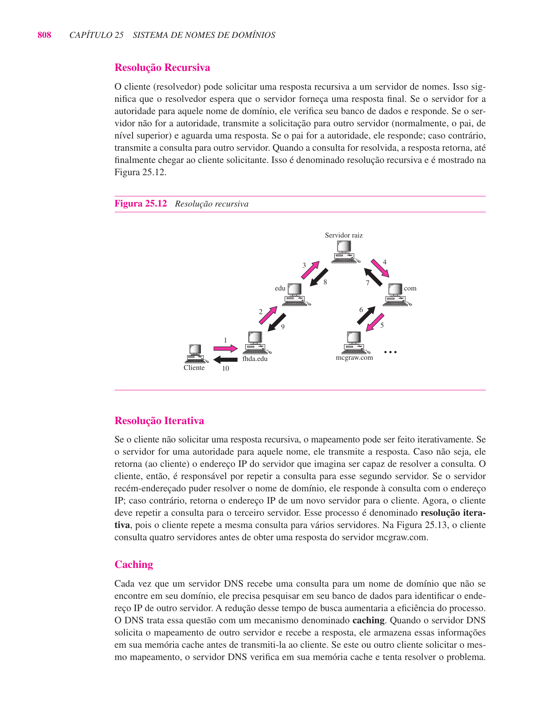
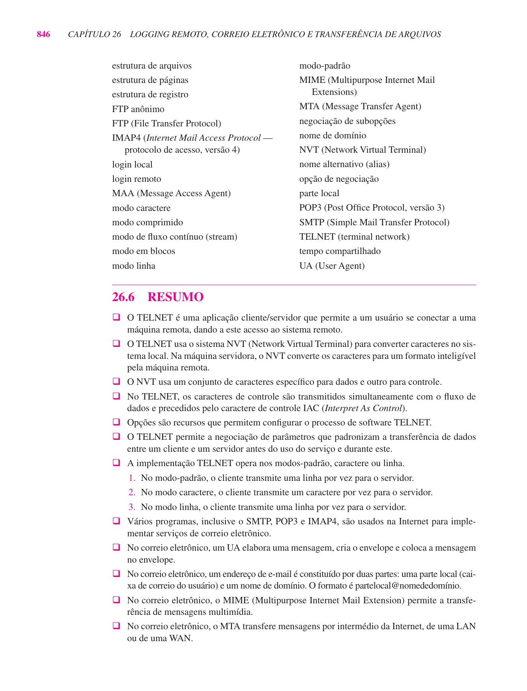
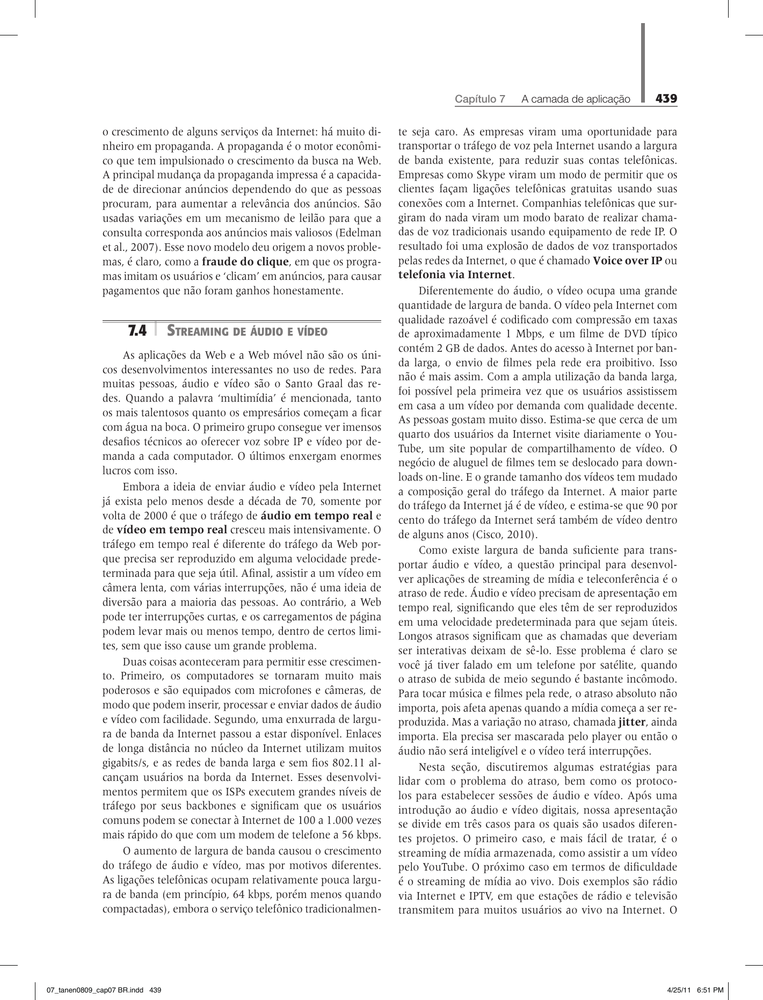

Introdução11.1
Hoje você vai ver a camada que fica mais próxima do usuário. Até aqui, estudamos como bits atravessam meios físicos, como quadros circulam em enlaces, como pacotes IP atravessam redes e como UDP e TCP entregam dados ao processo correto. Agora o foco muda para os protocolos usados pelas aplicações.
A camada de aplicação não está preocupada em escolher rotas nem em controlar janelas TCP. Ela define mensagens, comandos, respostas, nomes e formatos que permitem que programas reais conversem: navegador e servidor Web, cliente e servidor DNS, agente de e-mail e servidor de correio.
A camada de aplicação define os protocolos que dão significado aos dados transportados pela rede. DNS traduz nomes em endereços, e-mail organiza envio e recebimento de mensagens, e HTTP permite a transferência de recursos na Web.
Esta aula usa como base o Forouzan, capítulos 25, 26 e 27, e o Tanenbaum, capítulo 7, com recorte nas seções de DNS, correio eletrônico e Web/HTTP.
Mapa de leitura dos livros11.2
Antes de entrar nos protocolos, vale deixar claro de onde a aula está saindo nos dois livros.
No Forouzan, os capítulos 25, 26 e 27 aparecem dentro da parte de Camada de Aplicação.
| Fonte | Trecho usado | Páginas do livro | Assunto |
|---|---|---|---|
| Forouzan | Capítulo 25 | 789 a 815 | Sistema de Nomes de Domínios, espaço de nomes, servidores, resolução, mensagens e DDNS |
| Forouzan | Capítulo 26 | 816 a 850 | Correio eletrônico, SMTP, POP3, IMAP, MIME e transferência de arquivos |
| Forouzan | Capítulo 27 | 851 a 882 | WWW, arquitetura Web, documentos, URL, HTTP, cache e segurança |
No Tanenbaum, o capítulo 7 se chama A camada de aplicação. Para esta aula, usamos principalmente as partes abaixo.
| Fonte | Trecho usado | Páginas do livro | Assunto |
|---|---|---|---|
| Tanenbaum | 7.1 | 384 a 391 | DNS, ambiente de nomes, registros e servidores |
| Tanenbaum | 7.2 | 391 a 407 | Correio eletrônico, agentes, formato, transferência e entrega final |
| Tanenbaum | 7.3.1 a 7.3.4 | 407 a 436 | Web, URLs, servidores, páginas e HTTP |
O capítulo 7 do Tanenbaum também trata de streaming, entrega de conteúdo e redes peer-to-peer. Esses temas ficam fora do foco de hoje. O objetivo aqui é entender os três protocolos essenciais mais comuns quando pensamos em uso diário da Internet: DNS, e-mail e HTTP.
O papel da camada de aplicação11.3
Quando um usuário acessa um site, ele normalmente pensa em uma ação simples: digitar um endereço no navegador e pressionar Enter. Por trás disso, várias camadas trabalham juntas.
- A aplicação precisa transformar um nome, como
www.exemplo.com, em um endereço IP. - O navegador precisa abrir uma conexão com o servidor correto.
- O cliente precisa enviar uma solicitação compreensível para o servidor.
- O servidor precisa responder com um documento, uma imagem, um erro ou outro recurso.
Essas etapas não são definidas pelo IP nem pelo TCP. O IP entrega pacotes entre hosts. O TCP entrega bytes entre processos. Mas quem define o significado desses bytes é a camada de aplicação.
Se TCP entrega um fluxo confiável de bytes, por que ainda precisamos de protocolos como HTTP, SMTP e DNS?
Porque confiabilidade de transporte não define semântica. O TCP pode garantir que os bytes cheguem em ordem, mas não diz o que significa GET / HTTP/1.1, nem como representar um endereço de e-mail, nem como consultar o endereço IP associado a um nome de domínio.
| Protocolo | Problema principal | Transporte comum | Porta comum |
|---|---|---|---|
| DNS | Resolver nomes em registros, como endereços IP | UDP ou TCP | 53 |
| SMTP | Enviar mensagens de e-mail entre servidores | TCP | 25 |
| POP3 | Baixar mensagens da caixa postal | TCP | 110 |
| IMAP | Acessar e sincronizar mensagens no servidor | TCP | 143 |
| HTTP | Transferir recursos Web | TCP | 80 |
| HTTPS | HTTP sobre transporte seguro | TCP | 443 |
DNS: nomes para máquinas11.4
O DNS, ou Domain Name System, existe porque pessoas trabalham melhor com nomes do que com endereços numéricos. É mais simples lembrar www.universidade.edu.br do que lembrar um endereço IP.
Mas a rede não encaminha pacotes usando nomes. Roteadores trabalham com endereços IP. Portanto, antes de acessar muitos serviços, a aplicação precisa resolver o nome em algum tipo de registro útil.
DNS não é apenas "traduzir site para IP". O DNS é um banco de dados distribuído de registros. Um nome pode ter registros de endereço, registros de servidor de e-mail, aliases e outros tipos de informação.
O espaço de nomes11.4.1
O DNS organiza nomes em uma estrutura hierárquica. No topo está a raiz. Abaixo aparecem domínios de alto nível, como com, org, br e edu. Depois vêm subdomínios administrados por organizações.

A ideia importante é que o nome completo descreve um caminho dentro dessa hierarquia. Por exemplo:
www.exemplo.com.br
Esse nome pode ser lido da direita para a esquerda.
| Parte | Papel |
|---|---|
br |
Domínio de alto nível de país |
com |
Subdomínio comercial dentro de br |
exemplo |
Domínio da organização |
www |
Host ou serviço dentro do domínio |
Suponha que um navegador precise acessar:
https://www.exemplo.com.br/aulas/redes.html
Antes de buscar a página, ele precisa descobrir o endereço IP de www.exemplo.com.br. Essa consulta é feita ao DNS. Depois que o endereço é obtido, o navegador pode abrir uma conexão com o servidor e usar HTTP ou HTTPS.
O DNS não baixa a página. Ele apenas ajuda a localizar o servidor.
Servidores DNS11.4.2
O DNS é distribuído. Não existe um único servidor mundial contendo todos os nomes. Se existisse, ele seria um gargalo e um ponto único de falha.
O funcionamento depende de vários níveis de servidores.
| Tipo de servidor | Função |
|---|---|
| Servidores raiz | Indicam servidores responsáveis por domínios de alto nível |
| Servidores TLD | Respondem por domínios como com, org, br e semelhantes |
| Servidores autoritativos | Mantêm os registros de uma zona específica |
| Resolvedor local | Recebe consultas do cliente e busca a resposta em nome dele |

Na prática, seu computador normalmente não consulta diretamente todos esses servidores. Ele pergunta a um resolvedor configurado no sistema, no roteador, no provedor ou em algum serviço público. Esse resolvedor pode usar cache para acelerar consultas repetidas.
Resolução iterativa e recursiva11.4.3
Em uma consulta recursiva, o cliente pede ao resolvedor: “descubra isso para mim”. O resolvedor assume o trabalho de consultar outros servidores até obter uma resposta ou falha.
Em uma consulta iterativa, um servidor pode responder: “não tenho a resposta final, mas pergunte a este outro servidor”. Assim, quem fez a pergunta continua seguindo referências.
Registros de recursos11.4.4
O DNS armazena registros. Cada registro tem um nome, um tipo, uma classe, um tempo de vida e um valor.
| Tipo | Uso comum |
|---|---|
A |
Associa um nome a um endereço IPv4 |
AAAA |
Associa um nome a um endereço IPv6 |
CNAME |
Define um alias para outro nome canônico |
MX |
Indica servidores de e-mail de um domínio |
NS |
Indica servidores de nomes de uma zona |
TXT |
Armazena texto associado ao domínio, usado também em verificações e políticas |
O domínio exemplo.com pode ter registros diferentes para finalidades diferentes.
www.exemplo.com. A 203.0.113.10
exemplo.com. MX 10 mail.exemplo.com.
mail.exemplo.com. A 203.0.113.20
O primeiro registro ajuda a acessar o site. O segundo informa que mensagens de e-mail para @exemplo.com devem ser entregues ao servidor mail.exemplo.com. O terceiro resolve o nome desse servidor de e-mail para um endereço IP.
Cache e TTL11.4.5
Como consultas DNS acontecem o tempo todo, o cache é essencial. Quando um resolvedor recebe uma resposta, ele pode guardá-la por um tempo definido pelo TTL, ou Time To Live.
Um TTL maior reduz consultas repetidas e melhora desempenho. Um TTL menor permite mudanças mais rápidas quando um endereço muda.
Não confunda o TTL do DNS com o TTL do IP. O TTL do IP limita a vida de um pacote em saltos. O TTL do DNS indica por quanto tempo uma resposta DNS pode permanecer em cache.
Correio eletrônico11.5
O e-mail é uma das aplicações mais antigas e importantes da Internet. Apesar de parecer simples para o usuário, ele envolve vários componentes.
Uma mensagem não vai diretamente do computador do remetente para o computador do destinatário. Em geral, ela passa por servidores de correio e fica armazenada até que o destinatário a acesse.

Agentes do sistema de e-mail11.5.1
O Forouzan separa o sistema de e-mail em agentes. Essa separação ajuda bastante a entender o caminho da mensagem.
| Componente | Papel |
|---|---|
| MUA | Agente do usuário, como cliente de e-mail ou webmail |
| MSA/MTA | Servidor que aceita e transfere mensagens |
| MDA | Agente que entrega a mensagem na caixa postal |
| Servidor de caixa postal | Mantém mensagens até o usuário acessá-las |
Em termos práticos, o usuário escreve a mensagem no cliente. O servidor de envio recebe a mensagem. Depois, servidores de correio transferem a mensagem até o domínio de destino. Por fim, o destinatário acessa sua caixa postal.
SMTP: envio e transferência11.5.2
O SMTP, ou Simple Mail Transfer Protocol, é usado para envio e transferência de mensagens. Ele funciona em cima do TCP e usa uma conversa textual entre cliente e servidor.
Uma troca SMTP simplificada pode ser lida assim.
Cliente: HELO cliente.exemplo.com
Servidor: 250 OK
Cliente: MAIL FROM:<ana@exemplo.com>
Servidor: 250 OK
Cliente: RCPT TO:<bruno@universidade.edu.br>
Servidor: 250 OK
Cliente: DATA
Servidor: 354 envie a mensagem
Cliente: Subject: Aula de redes
Cliente:
Cliente: Segue o material da aula.
Cliente: .
Servidor: 250 mensagem aceita
O ponto importante é perceber que o SMTP é um protocolo de envio. Ele não é, por si só, o protocolo usado pelo usuário para sincronizar sua caixa postal em vários dispositivos.
POP3 e IMAP: acesso à caixa postal11.5.3
Depois que a mensagem chega ao servidor do destinatário, o usuário precisa acessá-la. Para isso, aparecem POP3 e IMAP.
| Aspecto | POP3 | IMAP |
|---|---|---|
| Ideia principal | Baixar mensagens para o cliente | Manter mensagens organizadas no servidor |
| Estado no servidor | Mais simples | Mais rico |
| Uso com vários dispositivos | Menos adequado | Mais adequado |
| Pastas e sincronização | Limitado | Natural |
O POP3 foi pensado para um modelo mais simples: baixar mensagens e, muitas vezes, removê-las do servidor. O IMAP combina melhor com o uso atual, em que a mesma caixa postal é acessada por notebook, celular e webmail.
Por que o IMAP é mais adequado do que o POP3 quando o usuário acessa o mesmo e-mail pelo celular e pelo computador?
Porque o IMAP mantém o estado da caixa postal no servidor. Mensagens lidas, pastas, buscas e organização podem ser refletidas em vários clientes. No POP3, o foco histórico é o download da mensagem para um cliente específico.
MIME: mensagens além de texto simples11.5.4
O e-mail original foi projetado para mensagens textuais simples. Mas mensagens modernas carregam anexos, imagens, HTML e caracteres de várias línguas. O MIME, ou Multipurpose Internet Mail Extensions, amplia o formato da mensagem para permitir esses conteúdos.
Com MIME, uma mensagem pode ter várias partes.
| Parte | Exemplo |
|---|---|
| Cabeçalhos | From, To, Subject, Date |
| Corpo textual | Texto simples ou HTML |
| Anexos | PDF, imagem, planilha |
| Tipo de conteúdo | text/plain, text/html, image/png, application/pdf |
SMTP transporta a mensagem. MIME descreve como representar conteúdos dentro dela. São problemas diferentes.
Web e HTTP11.6
A Web combina três ideias centrais: identificação de recursos por URL, documentos ligados por hipertexto e transferência por HTTP.
Quando usamos um navegador, não estamos apenas abrindo “a Internet”. Estamos usando uma aplicação que interpreta URLs, consulta DNS, abre conexões, envia requisições HTTP, recebe respostas e monta uma página com texto, imagens, estilos e scripts.
URL11.6.1
Um URL, ou Uniform Resource Locator, identifica onde está um recurso e como acessá-lo.
https://www.exemplo.com.br/aulas/redes.html
Esse URL pode ser separado assim.
| Parte | Valor | Significado |
|---|---|---|
| Esquema | https |
Protocolo usado |
| Host | www.exemplo.com.br |
Nome do servidor |
| Caminho | /aulas/redes.html |
Recurso solicitado no servidor |
Ao acessar http://www.exemplo.com/index.html, o navegador executa uma sequência de passos.
- Identifica o host
www.exemplo.com. - Consulta o DNS para obter o endereço IP.
- Abre uma conexão TCP com o servidor, normalmente na porta 80.
- Envia uma requisição HTTP pedindo
/index.html. - Recebe uma resposta HTTP com status, cabeçalhos e corpo.
- Renderiza o conteúdo recebido.
O usuário vê uma página. A rede vê uma sequência de protocolos trabalhando em conjunto.
HTTP como solicitação e resposta11.6.2
O HTTP é um protocolo de aplicação baseado no modelo requisição-resposta. O cliente envia uma requisição. O servidor responde.

Uma requisição HTTP simples pode ser escrita assim.
GET /index.html HTTP/1.1
Host: www.exemplo.com
User-Agent: NavegadorExemplo/1.0
Accept: text/html
A resposta pode vir assim.
HTTP/1.1 200 OK
Content-Type: text/html
Content-Length: 1250
<html>
...
</html>
O primeiro bloco é a linha de requisição e os cabeçalhos. O segundo bloco é a linha de status, os cabeçalhos de resposta e o corpo.
Métodos HTTP11.6.3
O método informa a intenção da requisição.
| Método | Ideia principal |
|---|---|
GET |
Solicitar um recurso |
HEAD |
Solicitar apenas cabeçalhos |
POST |
Enviar dados para processamento |
PUT |
Substituir ou criar um recurso no destino indicado |
DELETE |
Solicitar remoção de um recurso |
OPTIONS |
Consultar opções de comunicação |
Em navegação comum, GET aparece o tempo todo. Em formulários e APIs, POST, PUT e DELETE são comuns.
Códigos de status11.6.4
O status da resposta informa o resultado geral da requisição.
| Classe | Significado | Exemplo |
|---|---|---|
| 1xx | Informação | 100 Continue |
| 2xx | Sucesso | 200 OK |
| 3xx | Redirecionamento | 301 Moved Permanently |
| 4xx | Erro do cliente | 404 Not Found |
| 5xx | Erro do servidor | 500 Internal Server Error |
404 não significa que a Internet caiu. Significa que o servidor foi alcançado, mas não encontrou o recurso solicitado naquele caminho.
Conexões persistentes11.6.5
No HTTP/1.0, era comum abrir uma conexão TCP para cada objeto. Isso era caro quando uma página tinha muitos elementos, como HTML, imagens e arquivos de estilo.
O HTTP/1.1 tornou comum o uso de conexões persistentes. Assim, uma mesma conexão TCP pode carregar várias requisições e respostas em sequência.

O ganho é reduzir o custo de criar várias conexões TCP. Lembre que uma conexão TCP exige handshake, controle de estado e encerramento. Se uma página precisa buscar muitos recursos no mesmo servidor, reaproveitar a conexão melhora o desempenho.
Cache HTTP11.6.6
Assim como no DNS, cache também é importante na Web. O HTTP permite que navegadores e proxies guardem cópias de recursos e verifiquem se elas ainda são válidas.
Isso reduz latência e tráfego, mas exige cuidado: uma cópia em cache não pode ser usada indefinidamente se o conteúdo mudou.
| Mecanismo | Ideia |
|---|---|
Cache-Control |
Define políticas de cache |
Expires |
Indica uma data de expiração |
Last-Modified |
Informa quando o recurso foi alterado |
ETag |
Identificador de versão do recurso |
If-Modified-Since |
Cliente pergunta se houve modificação desde uma data |
If-None-Match |
Cliente valida usando uma ETag |
Um navegador já tem uma imagem em cache. Em vez de baixar tudo novamente, ele pode perguntar ao servidor se a imagem mudou.
GET /logo.png HTTP/1.1
Host: www.exemplo.com
If-None-Match: "abc123"
Se a imagem não mudou, o servidor pode responder:
HTTP/1.1 304 Not Modified
Nesse caso, o navegador reutiliza a cópia local. Isso economiza tempo e banda.
Juntando DNS, TCP, HTTP e e-mail11.7
Os protocolos de aplicação raramente aparecem isolados. Eles se apoiam nos serviços das camadas inferiores e também se combinam entre si.
Quando acessamos uma página Web, o DNS normalmente aparece antes do HTTP. Quando enviamos e-mail, o DNS pode ser usado para localizar o servidor de correio do domínio de destino por meio de registros MX. Quando a aplicação precisa de entrega confiável, TCP aparece como transporte comum.
Considere o envio de uma mensagem para aluno@universidade.edu.br.
- O cliente de e-mail entrega a mensagem ao servidor de envio.
- O servidor consulta o DNS procurando o registro
MXdeuniversidade.edu.br. - O DNS informa qual servidor recebe e-mails desse domínio.
- O servidor de origem abre uma conexão TCP com o servidor de destino.
- O SMTP transfere a mensagem.
- O destinatário lê a mensagem depois, usando IMAP, POP3 ou webmail.
Perceba que DNS e SMTP trabalham juntos, mas resolvem problemas diferentes.
Mini-laboratório no Linux11.8
Os comandos abaixo servem para observar a camada de aplicação funcionando na prática. Alguns dependem de acesso à Internet, especialmente os exemplos com dig e curl para domínios externos. Os exemplos com 127.0.0.1 rodam localmente na própria máquina.
. Fazer uma consulta DNS simples11.8.1
dig www.google.com
O que observar:
| Campo ou seção | Como interpretar |
|---|---|
QUESTION SECTION |
Nome e tipo de registro consultado |
ANSWER SECTION |
Resposta obtida, quando existe |
A ou AAAA |
Endereço IPv4 ou IPv6 associado ao nome |
| TTL | Tempo pelo qual a resposta pode ficar em cache |
Esse comando mostra a função mais lembrada do DNS: resolver um nome para um endereço. Mesmo assim, é importante observar que a resposta vem como um registro DNS, não como uma tradução mágica feita pelo navegador.
. Consultar tipos diferentes de registros DNS11.8.2
dig google.com MX
dig google.com NS
dig google.com TXT
O ponto didático é mostrar que DNS não guarda apenas endereços IP.
| Consulta | O que mostra |
|---|---|
MX |
Servidores responsáveis por receber e-mail do domínio |
NS |
Servidores de nomes responsáveis pelo domínio |
TXT |
Registros textuais usados para verificações, políticas e outros metadados |
No caso do e-mail, o registro MX é especialmente importante. Ele permite que um servidor SMTP descubra para qual servidor deve entregar mensagens destinadas a um domínio.
. Ver o caminho da resolução DNS11.8.3
dig +trace www.google.com
Esse comando mostra uma resolução percorrendo a hierarquia do DNS. Na saída, procure a passagem pelos servidores raiz, pelos servidores do domínio de alto nível e pelos servidores autoritativos.
A saída pode variar de uma rede para outra. O objetivo não é decorar os servidores que aparecem, mas enxergar que o DNS é distribuído e hierárquico.
. Comparar DNS por UDP e por TCP11.8.4
dig www.google.com
dig +tcp www.google.com
Consultas DNS comuns normalmente usam UDP, porque são pequenas e rápidas. Porém, DNS também pode usar TCP, por exemplo em respostas maiores ou em algumas operações administrativas.
Esse exemplo conecta a aula atual com a aula anterior: a aplicação escolhe o transporte de acordo com o serviço de que precisa.
. Ver cabeçalhos HTTP11.8.5
curl -I http://example.com
O parâmetro -I solicita apenas os cabeçalhos da resposta. O que observar:
| Informação | Como interpretar |
|---|---|
HTTP/1.1 200 OK ou outro status |
Resultado geral da requisição |
Content-Type |
Tipo do conteúdo retornado |
Content-Length |
Tamanho do corpo, quando informado |
Location |
Destino de redirecionamento, quando existir |
| Cabeçalhos de cache | Pistas sobre validade e armazenamento da resposta |
Esse comando é útil porque mostra que uma resposta HTTP não é apenas a página. Antes do corpo, há metadados que ajudam cliente e servidor a coordenar a transferência.
. Ver uma requisição HTTP com detalhes11.8.6
curl -v http://example.com
Com -v, o curl mostra detalhes da conexão e da conversa HTTP. Procure linhas como estas:
> GET / HTTP/1.1
> Host: example.com
< HTTP/1.1 200 OK
As linhas que começam com > representam dados enviados pelo cliente. As linhas que começam com < representam dados recebidos do servidor.
. Comparar HTTP e HTTPS11.8.7
curl -I https://example.com
Aqui a aplicação continua sendo HTTP, mas a comunicação ocorre sobre uma camada segura, normalmente TLS, usando a porta 443. O conteúdo HTTP fica protegido durante o transporte.
HTTPS não é um protocolo completamente separado do HTTP em termos de semântica de aplicação. Ele é HTTP protegido por uma camada de segurança.
. Observar uma requisição HTTP chegando localmente11.8.8
Em um terminal, abra uma escuta TCP local.
nc -l 8080
Em outro terminal, envie uma requisição com curl.
curl -v http://127.0.0.1:8080/teste
No terminal do nc, você verá a requisição HTTP chegando como texto, incluindo a linha GET /teste HTTP/1.1 e cabeçalhos como Host e User-Agent.
Esse exemplo é forte porque mostra que HTTP é uma conversa estruturada sobre uma conexão TCP. O navegador ou o curl montam essa conversa automaticamente, mas ela pode ser observada diretamente.
. Responder manualmente com HTTP11.8.9
Em um terminal, rode:
printf 'HTTP/1.1 200 OK\r\nContent-Type: text/plain\r\n\r\nOla, HTTP!\n' | nc -l 8080
Em outro terminal, acesse:
curl http://127.0.0.1:8080
O curl deve mostrar:
Ola, HTTP!
Aqui o servidor é apenas um nc respondendo texto no formato esperado. Isso ajuda a separar duas ideias: HTTP é o protocolo; Apache, Nginx e outros são implementações de servidores que falam esse protocolo.
. Ver conexões TCP para serviços Web11.8.10
Com algumas abas ou requisições Web abertas, execute:
ss -tn '( dport = :80 or dport = :443 )'
O que observar:
| Informação | Como interpretar |
|---|---|
ESTAB |
Conexão TCP estabelecida |
dport = :80 |
Conexão com serviço HTTP comum |
dport = :443 |
Conexão com serviço HTTPS |
Esse comando reforça a separação entre camadas. HTTP e HTTPS são protocolos de aplicação, mas aparecem no sistema operacional como conexões TCP associadas a portas.
Evite depender de testes SMTP reais com servidores externos durante a aula. A porta 25 costuma ser bloqueada por provedores e instituições, e conexões manuais podem ser interpretadas como atividade suspeita. Para e-mail, a demonstração mais segura é observar registros MX com dig e explicar como eles orientam a entrega por SMTP.
Síntese11.9
A camada de aplicação é onde os serviços ficam visíveis para usuários e programas. Ela não substitui as camadas inferiores. Ela usa essas camadas para definir conversas com significado.
DNS resolve o problema dos nomes. Sem ele, teríamos de lidar diretamente com endereços IP na maior parte do tempo. E-mail resolve o envio, armazenamento e acesso assíncrono a mensagens. HTTP resolve a transferência de recursos na Web usando requisições e respostas.
| Protocolo | Ideia que você deve guardar |
|---|---|
| DNS | Banco de dados distribuído que associa nomes a registros |
| SMTP | Protocolo principal de envio e transferência de e-mail |
| POP3 | Protocolo simples para baixar mensagens |
| IMAP | Protocolo mais adequado para sincronizar caixa postal no servidor |
| HTTP | Protocolo de requisição-resposta usado para transferir recursos Web |
A Internet não é apenas IP e TCP. Esses protocolos entregam dados, mas DNS, e-mail e HTTP dão significado prático à comunicação. É na camada de aplicação que a rede se transforma em serviços usados todos os dias.